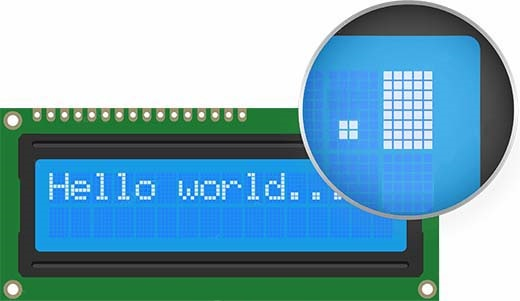
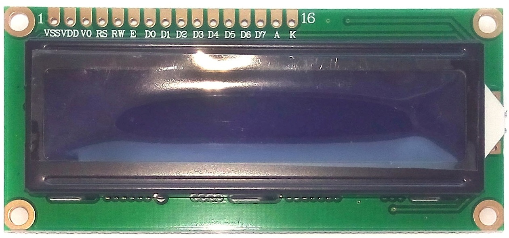
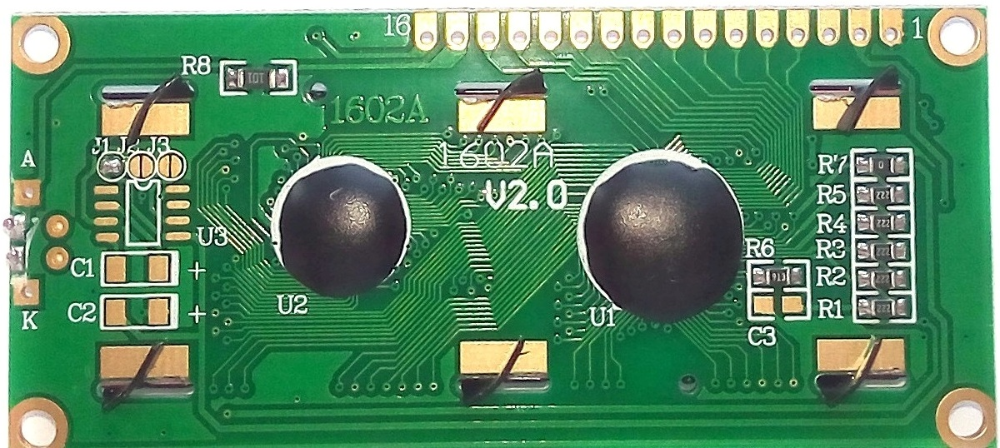
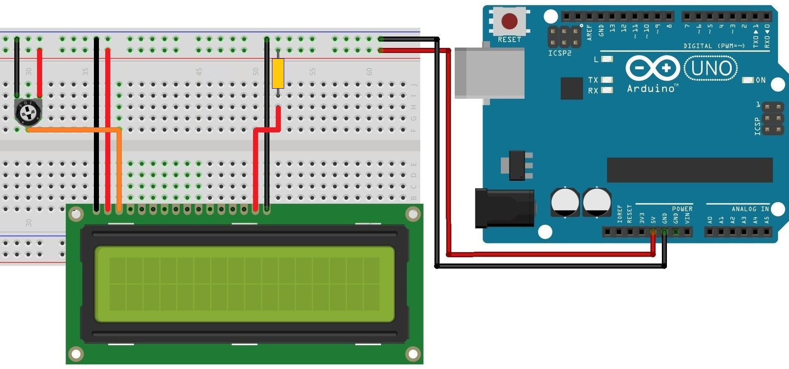
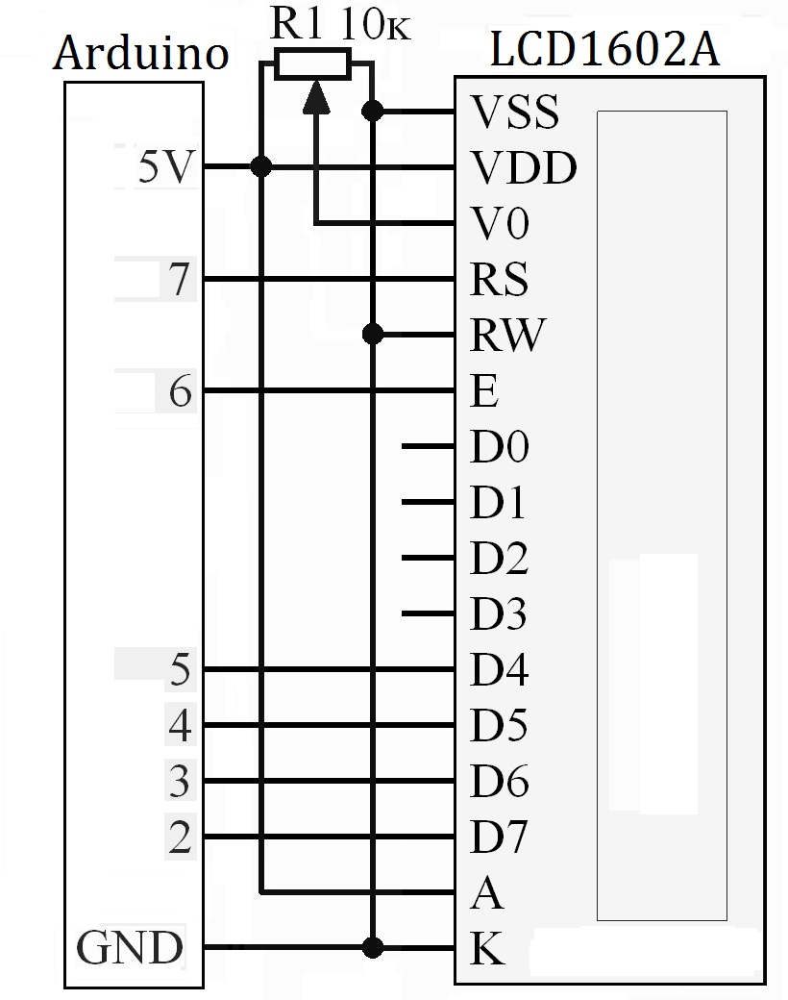
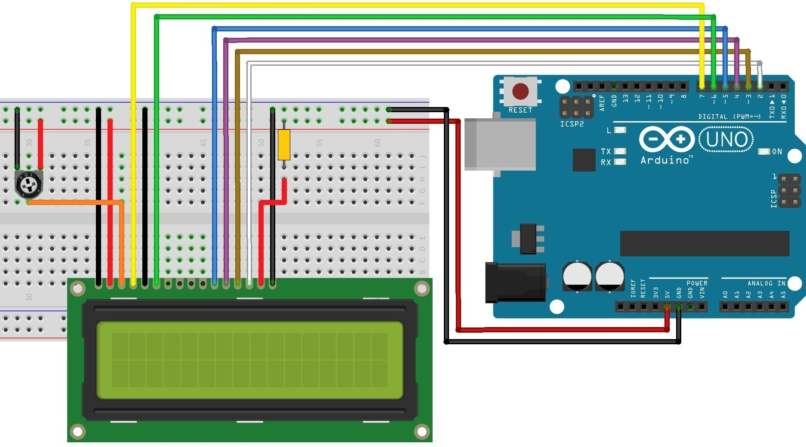
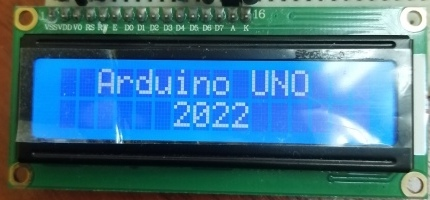

Подключение ЖК-дисплея 1602A к Arduino
Жидкокристаллический дисплей (ЖК-дисплей, Liquid Crystal Display, LCD-дисплей) построен на технологии жидких кристаллов. Когда к такому кристаллу прикладывается напряжение, он становится непрозрачным, перекрывая подсветку, которая находится за экраном. В результате эта область становиться темной по сравнению с другой. Таким образом на экране отображаются символы.
ЖК-дисплеи идеально подходят для отображения только текста/символов, отсюда у них есть и другое название — «символьные ЖК-дисплеи». Дисплей имеет светодиодную подсветку и может отображать 32 символа в кодировке ASCII в двух рядах по 16 символов в каждом ряду.
Если внимательно посмотреть на экран, можно увидеть маленькие прямоугольники для каждого символа на дисплее (знакоместо) и пиксели, которые составляют символ. Каждый из этих прямоугольников представляет собой сетку 5×8 пикселей.

Из всех доступных ЖК-дисплеев на рынке, наиболее часто используемой является ЖК-дисплей 1602A, который может отображать ASCII символа в 2 строки (16 знаков в 1 строке) каждый символ в виде матрицы 5×7 пикселей.
ЖК-дисплей 1602A представляет собой электронный модуль основанный на драйвере HD44780 от Hitachi. ЖК-дисплей 1602А имеет 16 контактов и может работать в 4-битном режиме (с использованием только 4 линии данных) или 8-битном режиме (с использованием всех 8 строк данных). 8-битный режим быстрее, чем 4-битный. Это связано с тем, что что в 8-битном режиме мы передаем данные за один раз. Однако в 4-битном режиме мы должны разделить байт на 2 части, сдвинуть один из них на 4 бита вправо и выполнить 2 операции записи. 4-битный режим часто используется для экономии выводов микроконтроллера, а 8-битный режим лучше всего использовать, когда требуется высокая скорость в приложении и при этом доступно как минимум 10 выводов ввода/вывода микроконтроллера.
В данной статье рассматривается подключении в 4-битном режиме в котором используются только 6 контактов: RS, EN, D7, D6, D5 и D4.
Некоторые модели ЖК-дисплея 1602А не имеют штыревых контактов. К таким ЖК-дисплеям необходимо припаять штыревые контакты PLS-16, чтобы иметь возможность подключения дисплея к макетной плате.
Технические параметры
- Напряжение питания — 5 В
- Размер дисплея — 2,6 дюйма
- Тип дисплея: 2 строки по 16 символов
- Цвет подсветки — синий
- Цвет символов — белый
- Габаритные размеры — 80мм×35мм×11мм
На лицевой части модуля располагается ЖК-дисплей и группа контактов.

Назначение контактов:
- VSS (GND) — «-» питание модуля. Подключается к GND на Arduino.
- VDD — «+» питание модуля. Подключается к контакту "5V" на Arduino.
- VO (LCD Contrast) — Вывод управления контрастом и яркостью ЖК-дисплея. Используя простой делитель напряжения с потенциометром, можно отрегулировать контрастность.
- RS (Register Select) — Выбор регистра (установка режима отправки команды или данных). Когда на выводе RS установлено значение LOW, мы отправляем команды на ЖК-дисплей (например, очистить дисплей). Когда вывод RS установлено значение HIGH, мы отправляем данные (символы) на ЖК-дисплей.
- RW (Read/Write) — Выбор режима записи или чтения (при подключении к земле, устанавливается режим записи). Если используем ЖК-дисплей в качестве устройства вывода (режим записи), то на этот вывод подается высокий (HIGH) уровень.
- E (EN, Enable) — Строб по спаду, включение дисплея. Когда на этом выводе установлено значение LOW ЖК-дисплей не реагирует на то, что происходит с R/W, RS и линиями шины данных. Если на этом выводе HIGH, ЖК-дисплей обрабатывает входящие данные.
- D0-D7 (Data Bus) — Биты интерфейса. Выводы, по которым передаются 8-битные данные на дисплей.
- A — «+» питание подсветки.
- K — «-» питание подсветки.
На задней части модуля (рис. 3) расположены две микросхемы в «капельном» исполнении (ST7066U и ST7065S) и электрическая обвязка. Резистор R8 (100 Ом) служит ограничительным резистором для светодиодной подсветки, поэтому можно подключить 5В напрямую к контакту A.

Проверка ЖК-дисплея
ЖК-дисплей 1602A имеет две отдельные линии питания:
- Контакт 1 и контакт 2 для питания самого ЖК-дисплея 1602A.
- Контакт 15 и контакт 16 для подсветки ЖК-дисплея 1602A.
Схема для проверки ЖК-дисплея 1602A показана на рис. 4. Для точной настройки контрастности необходимо подключить крайние выводы подстроечного (переменного) резистора сопротивлением 10 кОм к 5V и GND, а центральный контакт (бегунок) потенциометра к контакту 3 (Vo) на ЖК-дисплея.

После включения Arduino увидите подсветку. Поворачивая ручку подстроечного резистора необходимо добиться появления первой строки прямоугольников. Если это произошло, ЖК-дисплей работает правильно.
Подключение ЖК-дисплея
Схема подключение ЖК-дисплея 1602A к Arduino с помощью макетной платы показана на рис. 5. Четыре контакта данных (D4-D7) дисплея подключаем к цифровым выводам 5, 4, 3, 2, контакт E — к выводу 6, а контакт RS — к выводу 7 на Arduino.


Скетч №1
#include "LiquidCrystal.h" //Создаем LCD-объект. Выводы:(RS, EN, D4, D5, D6, D7) LiquidCrystal lcd(7, 6, 5, 4, 3, 2); void setup() { lcd.begin(16, 2); //Устанавливаем количество столбцов и строк на экране lcd.clear(); //Очищаем LCD дисплей lcd.setCursor(2, 0); //Устанавливаем курсор на столбец 2, строка 0 lcd.print("Arduino UNO"); //Выводим сообщение на экран lcd.setCursor(6, 1); //Устанавливаем курсор на столбец 6, строка 1 lcd.print("2022"); //Выводим сообщение на экран } void loop() { }
Скетч начинается с подключения библиотеки LiquidCrystal. Далее создается объект LiquidCrystal. Этот объект использует 6 параметров и указывает, какие выводы Arduino подключены к выводам RS, EN и выводам данных: D4, D5, D6 и D7.
Функция begin() задает размер дисплея, т.е. количества столбцов и строк. Если вы используете 16×2 символьный ЖК-дисплей, укажите параметры 16 и 2, если вы используете ЖК-дисплей 20×4, укажите параметры 20 и 4.
Функция clear() очищает экран и перемещает курсор в верхний левый угол.
Функция setCursor()указывает позицию курсора, где вам нужно отобразить новый текст на дисплее. Верхний левый угол считается (0, 0).
Функция print()выводит сообщение на экран с позиции курсора.

Источники
iarduino.ru - Символьный дисплей голубая подсветка LCD1602 IIC/I2C